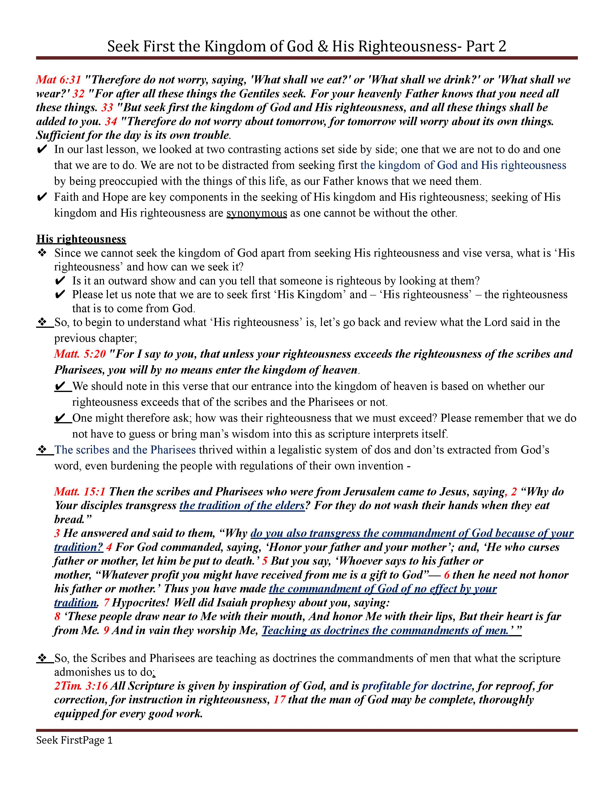
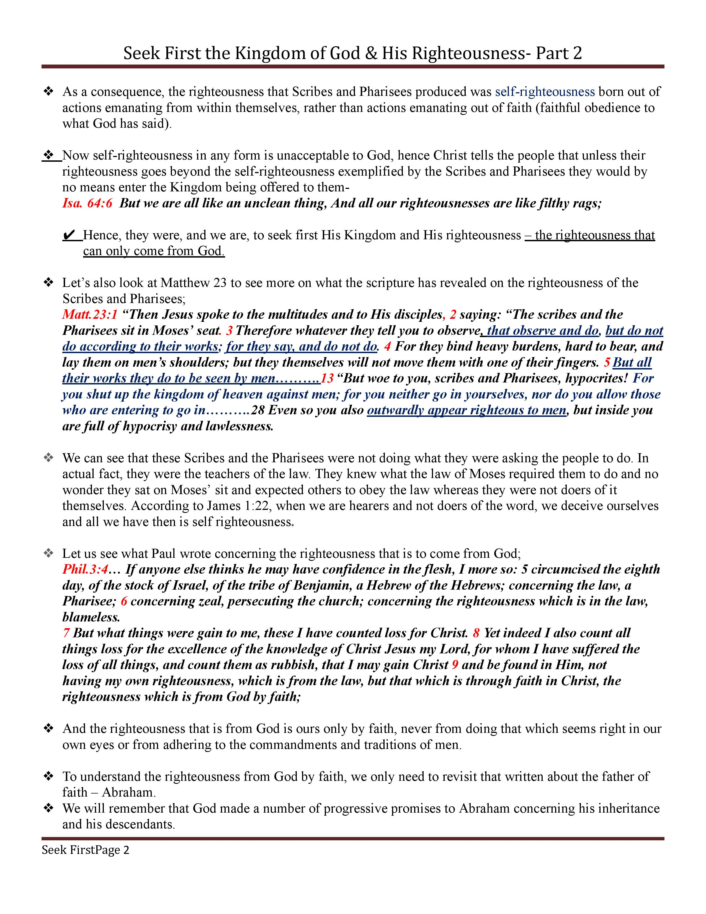
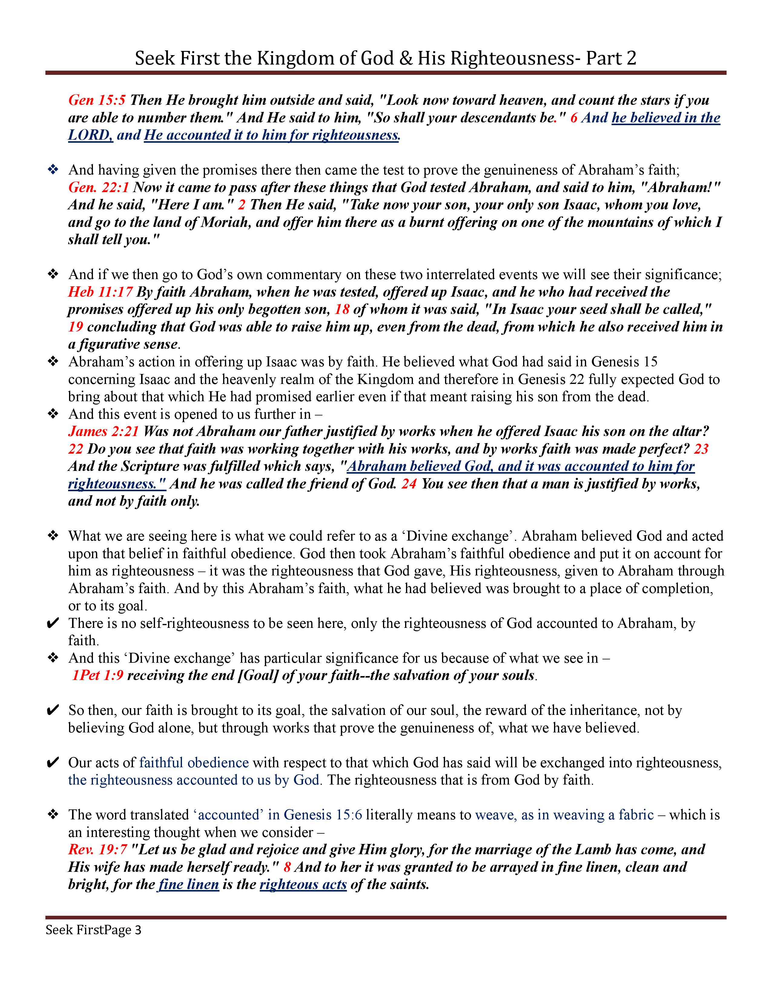
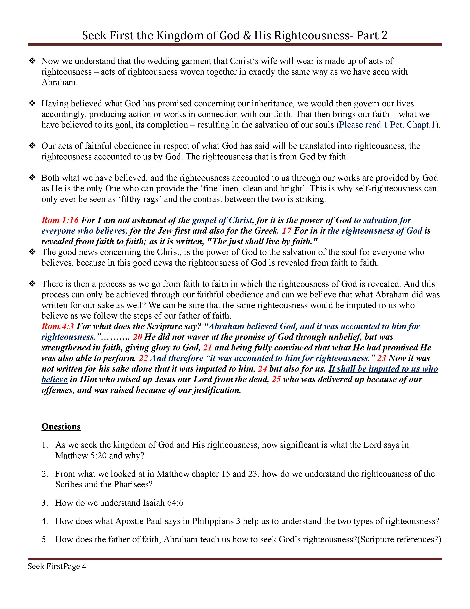
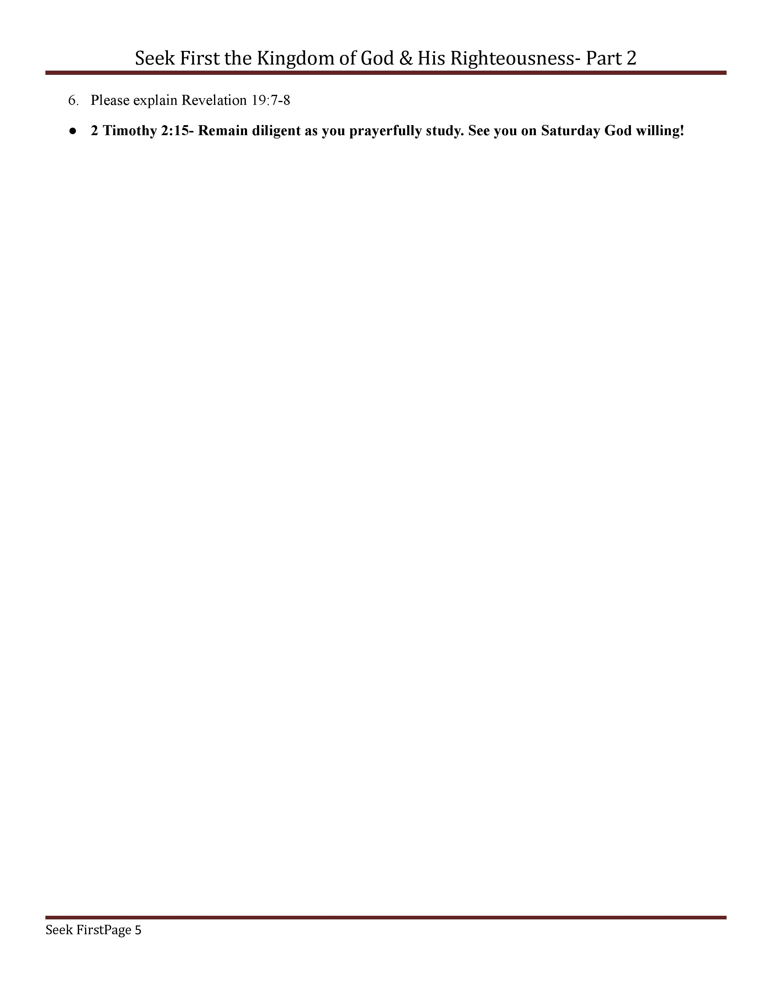

Matt 6:33 Seekers
:
Seek first the Kingdom of God and His Righteousness part 2
Home
Topics
In the Beginning
Part 1
Part 2
Part 3
Part 4
Part 5
Part 6
Seek first the Kingdom of God and His Righteousness
Part 1
Part 2
Part 3
Part 4
Fullscope of Scripture
The Attributes of the Word of God
Keys to Understanding and Interpreting Scripture
Studying Scripture the way Jesus taught His disciples
The Holy Spirit is our teacher. How does he teach?
Understanding Types and Antitypes
The Septenary arrangement of the Scripture
Parables, Metaphors and Figurative Language
The Foundation
Introduction
3a
3b
3c
3d
3e
Willful Sin/Unforgivable Sin
Select an option
March 4th 2023
March 11th 2023
Download Audio
    
Download PDF